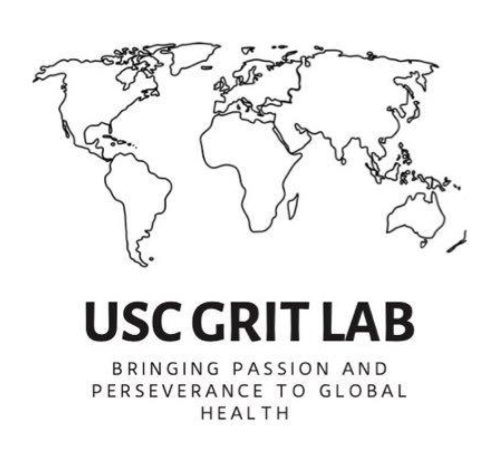
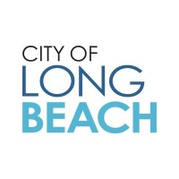
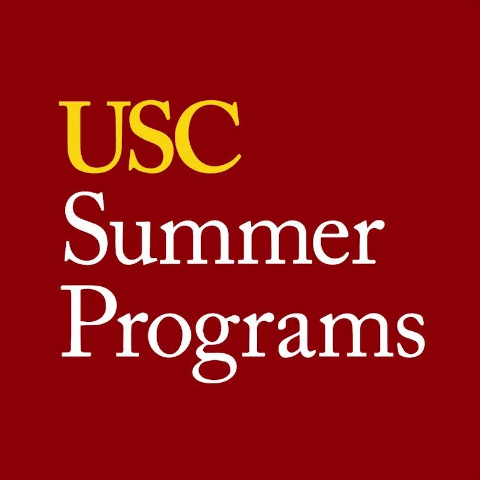
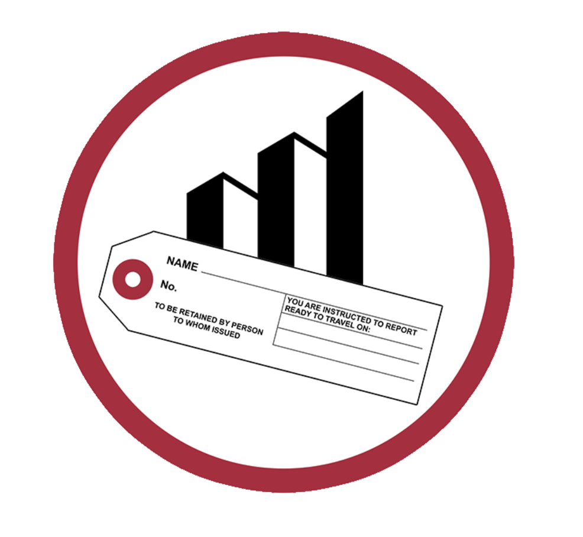

Public Health Data Scientist passionate about health equity, global collaboration, and the intersection of data, policy, and community empowerment.
Glad to share my experience as an undergraduate and graduate student at USC pursuing a BS in Global Health at the Keck School of Medicine Institute on Inequalities in Global Health , minor in Data Science at the Viterbi School of Engineering and a MS in Public Health Data Science at the Keck School of Medicine Department of Population and Public Health Science, and encourage you to pursue all the opportunities your program may offer.
Contact me on LinkedInNicole K. Tang
University of Southern California BS'25, Global Health
University of Southern California MS'25*, Public Health Data Science
* expected Dec 2025
Data Science Intern – Developed iOS app prototype in Swift for name, keyword, and date searches, and Python scripts to webscrape and query CDPH medical device recall databases.
Research Assistant and Data Analysis Lead supporting community-based health programs, training, and field research across Kenya and Uganda.
Data Analyst Intern supporting case management, service tracking, and demographic data analysis to inform homelessness prevention efforts.
Teaching Assistant facilitating discussions on health promotion, disease prevention, and health service delivery; managed course site and grading.
Data Science Intern – Built SQL database and Python scripts visualizing incarceration data and stories of Japanese American internment during WWII.
Nikkei Community Summer Intern organizing intergenerational programs, health education events, and leadership workshops improving elder quality of life.